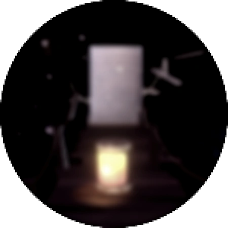
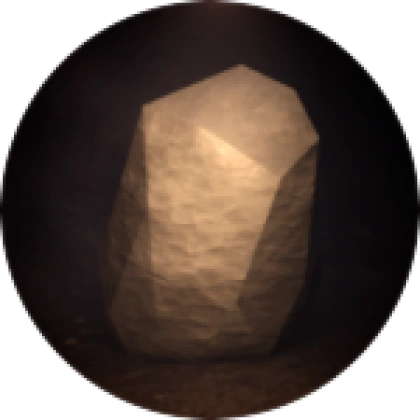
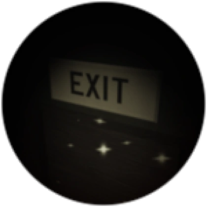
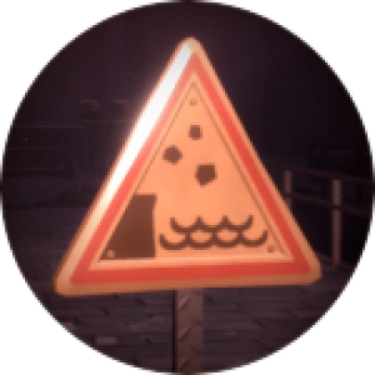
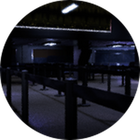

Досягнення
У DOORS є складні досягнення за проходження небезпечних випробувань і секретів гри.

A-1000Пройти все випробування до кімнати A-1000 у локації Rooms.

A Hard PlaceПройти складну секцію гри в режимі найлетших і небезпечних умов.

Back on TrackВідновити проходження після невдалої спроби або повернутися на правильний шлях.
Not 5 Stars
Отримати за проходження нещадного випробування Hotel Hell.

Rocky RoadПережити складну і небезпечну дорогу у важкому режимі проходження.

RedactedСекретне досягнення з прихованою умовою отримання.